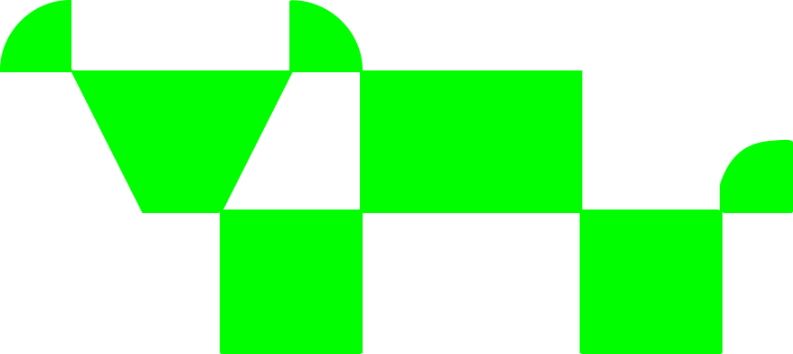

Nutrogan
Gestión ganadera offline-first
Plataforma PWA para el NEA: datos reales en el potrero, sin depender de la señal. Trabajo Final Integrador — Tecnicatura Universitaria en Programación.
Qué vamos a recorrer
- Cómo surgió y por qué esta problemática
- Objetivo que perseguimos (y el que no fingimos)
- Cómo lo llevamos adelante con CEDEVA y la UTN
- Arquitectura y stack: por qué estas decisiones
- Funciones de la app: criterio de producto
- Offline-first y UI “manos enguantadas”
- Qué demuestra el MVP hoy
- Mensaje a quienes están cursando la carrera
Quiénes lo construimos
Tec. Univ. en Programación — UTN FRRE Extensión Formosa · Comisión 2.2 · TFI G.21

Fabricio N. Duarte
Arquitectura PWA, UX/UI, lógica offline, GIS e IA asistida.

Enzo A. Ascona
PostgreSQL, seguridad RLS, stores Pinia y motor de datos.

Sebastián E. Amarilla
Docker, CI/CD, testing automatizado y calidad de entrega.
Cómo surgió Nutrogan
En el campo del NEA la decisión no espera a la señal 4G.
El TFI nos pidió un problema real, con usuarios reales y restricciones duras. En Formosa vimos una constante: planillas, memoria y WhatsApp… hasta que falta el dato que define si se vende, se mueve o se espera.
El punto de partida
- Ganadería de la región con baja conectividad
- Sistemas “solo nube” que fallan en el potrero
- Necesidad de trazabilidad: pesos, CC, agua, pastura
- Diálogo con el territorio vía CEDEVA Formosa
Por qué abordamos esta problemática
Gestión a ciegas
Sin GDPV ni historial confiable, el productor decide con intuición y datos incompletos.
La nube no alcanza
Apps que exigen online en el momento de cargar peso o agua… no sirven bajo el sol del monte.
Software sin territorio
Escalas y criterios ajenos al NEA. Nosotros anclamos CC a INTA 1–9 y validamos con CEDEVA.
No buscamos “otra app agro”. Buscamos cerrar el loop: observar → registrar → decidir → avisar al equipo.
Qué perseguimos
Objetivo de producto
Que un operario o técnico registre en el campo —offline— lo crítico del día (peso, CC, agua, movimiento) y que el administrador vea reportes honestos, alertas y valuación sin inventar métricas.
Objetivo formativo (TFI)
- Arquitectura real: PWA + BaaS + RLS
- Trabajo en equipo con roles claros
- Calidad: tests, CI, deploy
- Ética de datos: no fingir IoT ni precios
MVP demostrable en producción: www.nutrogan.site
Cómo lo llevamos adelante
Problema + territorio
Entrevistas y marco CEDEVA: qué se mide y qué no se inventa.
Diseño offline-first
Cola local, sync al volver la red, UI de campo primero.
GitFlow + roles
Lead / Data / DevOps. Features aisladas, review y CI.
Iterar con evidencia
Tests unitarios, smoke API, demo con datos históricos.
Criterios de campo, lectura de pastura/agua y anclaje a prácticas regionales. La universidad aporta ingeniería; el centro de validación aporta realidad productiva.
Por qué esta arquitectura
- Cliente inteligente: Vue/Quasar calcula GDPV, alertas y calidad de agua sobre datos cargados.
- BaaS (Supabase): Auth, Postgres, Storage y Edge Functions sin montar un backend monolítico.
- RLS por establecimiento: multi-tenant seguro desde el día uno.
- PWA instalable: un solo codebase web → celular del peón y notebook del dueño.
Principio rector
Offline no es un “modo especial”: es el camino feliz. La nube sincroniza; no condiciona la carga en potrero.
IndexedDB ←→ Sync ←→ Postgres
Por qué este stack tecnológico
Vue 3 + Quasar
PWA, componentes móviles, velocidad de entrega en equipo chico.
Pinia + persistencia
Estado de dominio + cola offline durable en el dispositivo.
Supabase
Postgres, Auth, RLS, Storage, Functions (mail, NDVI, MAG).
Leaflet + satélite
Potreros GeoJSON y NDVI vía Planetary Computer (Sentinel-2).
Vitest + Cypress
Unit + smoke + E2E sobre flujos que no pueden fallar en demo.
Docker + CI
Paridad de entornos y pipelines como hábito profesional.
Por qué estas funciones (y no otras)
Unidad operativa real del establecimiento.
Métrica que el productor entiende y audita.
Escala argentina; sin IA fingida en el teléfono.
Recursos que limitan carga animal en el NEA.
Costo visible; reportes con margen operativo.
Cierra el loop: del dato al aviso (mail).
Historia: peso, costos, salud, stock.
Admin / técnico / operario (modo campo).
Criterio: cada pantalla debe sobrevivir sin inventar sensores.
Sin señal, con datos
Qué hace el dispositivo
- Encola altas (peso, CC, agua, movimientos)
- Persiste en IndexedDB
- Muestra pendientes / fallidos con claridad
- Sincroniza al recuperar red
Si el producto solo funciona en la oficina, no es software de campo.
El operario ve “SINCRONIZADO” o “PENDIENTES”. No hay magia: hay cola, reintentos y honestidad de estado.
Manos enguantadas
Modo campo pensado para trabajar a caballo, con guantes, sol y poco tiempo. No es “responsive”: es otra interfaz.
- Botones XL, alto contraste
- Flujos cortos: CC, AGUA, pesos
- Roles: el operario no se pierde en satélite/admin
- Feedback inmediato + sync después
Aprendizaje de diseño
En la facultad a veces diseñamos para pantallas perfectas. En Formosa aprendimos a diseñar para manos sucias y poca batería. Eso también es ingeniería de software.
Qué se puede mostrar hoy
En producción
PWA viva, establecimiento real, seed histórico para reportes densos.
Cerrado
Dato → alerta → mail al equipo. GDPV y CC sin inventos.
Contexto
NDVI real, agua orientativa, precio MAG/manual con categoría.
Un TFI importa cuando sale del aula
Elegí un problema que duela en tu región. Buscá quien sepa del dominio (nosotros: CEDEVA). Trabajá en equipo con roles. Medí calidad. No finjas datos. La UTN FRRE Extensión Formosa formó egresados 2025 que dejaron software corriendo.
Gracias · ¿Preguntas?